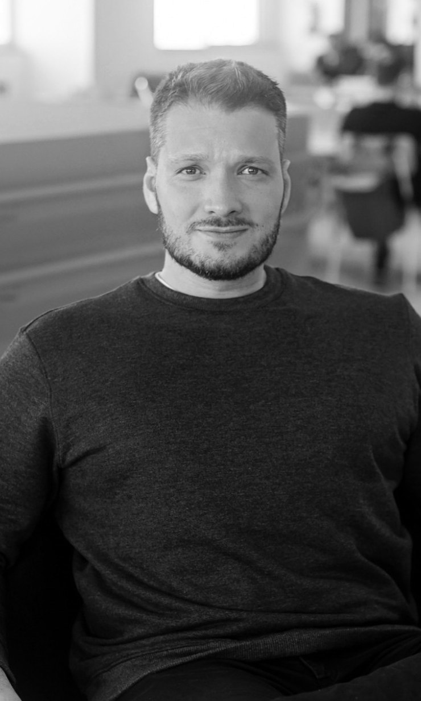
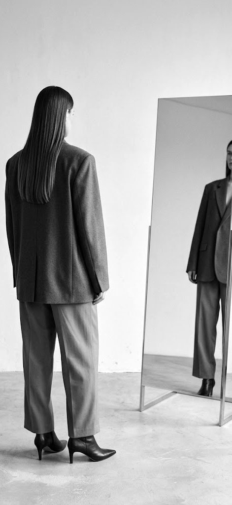
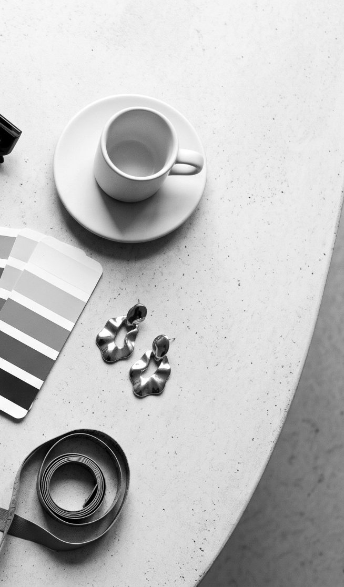
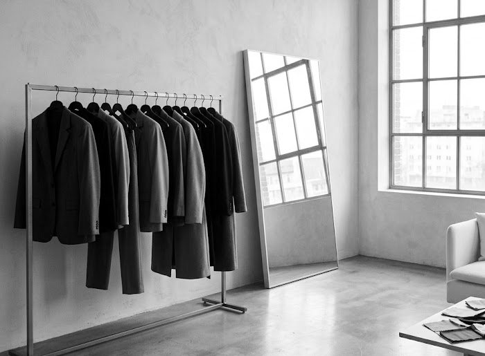
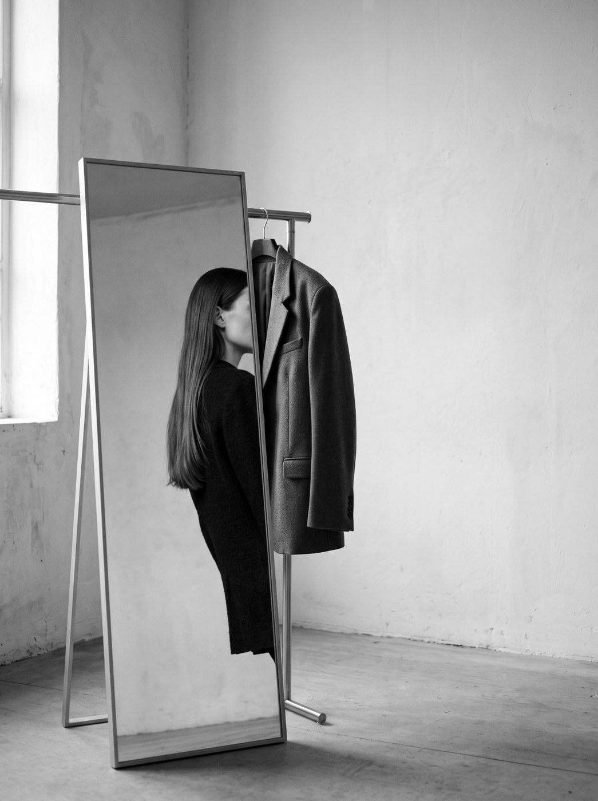

Proposta comercialOutubro 2026
Estratégia e gestão de aquisição digital
ParaSara MeirelesConsultoria de Estilo e Imagem
PorBernardo CostaEstratégia e Gestão de Aquisição
Desenvolver e executar uma estratégia de aquisição digital para ampliar a visibilidade da Sara junto ao público qualificado, gerar novas oportunidades comerciais e aumentar as vendas de consultorias e mentorias online.
O trabalho integra mídia paga, inteligência de audiência, otimização de conversão e estratégia de crescimento, conectando o investimento em publicidade aos resultados do negócio.

15+ anos conectando estratégia, performance e execução para transformar investimento em mídia em resultado de negócio.
Varejo, saúde, serviços financeiros e tecnologia · B2B e B2C
Definição e evolução da estratégia de crescimento digital, considerando o posicionamento da Sara, seus produtos e o perfil de suas potenciais clientes.
Segmentação de públicos prioritários, incluindo:
Planejamento, configuração, ativação e otimização de campanhas.
Meta Ads é o canal principal. Google Ads e TikTok Ads são avaliados na estratégia e já estão incluídos no pacote, caso sejam ativados.
Principal ambiente de aquisição, relacionamento e conversão, utilizando conteúdos da Sara para alcançar e desenvolver audiências qualificadas.
Captação de demanda qualificada de pessoas que já demonstram interesse por serviços de consultoria de estilo, imagem pessoal e mentorias relacionadas.
Ampliação de alcance, descoberta de marca e construção de novas audiências a partir de conteúdos em vídeo.
Construção e evolução de públicos para melhorar a eficiência da aquisição e reduzir desperdícios no investimento.
A ativação dessas audiências considera a disponibilidade de dados, os requisitos de cada plataforma e as regras de privacidade aplicáveis.
Acompanharemos a experiência da potencial cliente desde o primeiro contato com a Sara até a oportunidade comercial e a venda.
O trabalho não termina no clique.


Apoio estratégico na criação de novas oportunidades de captação de leads qualificados, especialmente no meio do funil de aquisição.
O escopo contempla concepção estratégica, recomendações de conteúdo e estruturação da lógica de aquisição. Desenvolvimento técnico integral de ferramentas ou páginas poderá ser orçado separadamente.
Acompanhamento contínuo das campanhas e dos indicadores, orientado à eficiência do investimento e à geração de receita.
Avaliar eficiência de anúncios e mensagens
Melhorar o aproveitamento do tráfego
Reduzir custo de aquisição de leads
Aumentar a eficiência comercial
Mensurar o investimento para conquistar clientes
Avaliar retorno sobre investimento em publicidade
Os indicadores de vendas e ROAS serão acompanhados conforme a disponibilidade dos dados comerciais e a capacidade de atribuição das conversões. A análise alimentará decisões recorrentes de investimento, segmentação, conteúdos, canais e otimização da jornada.
Os patrocínios representam ativações de conteúdos, não a produção de novas peças. O volume será distribuído conforme a estratégia, os resultados e a verba disponível.

| Ref. | Entregável | Volume |
|---|---|---|
| Ativação de mídia | ||
| 7.1 | Patrocínios de conteúdos em Meta Ads (Instagram/Facebook) | Até 20/mês |
| 7.2 | Gestão de campanha no Google Ads | 1 campanha, se ativado |
| 7.3 | Patrocínios de conteúdos no TikTok | Até 10/mês, se ativado |
| Estratégia e otimização | ||
| 7.4 | Estratégia, segmentações e testes de audiências | Contínuos |
| 7.5 | Remarketing e otimização de campanhas | Contínuos |
| 7.6 | Análise da jornada e recomendações de conversão | Contínuas |
| 7.7 | Apoio estratégico em produtos, ofertas e inbound marketing | Conforme oportunidades |
| Acompanhamento | ||
| 7.8 | Relatório de desempenho e resultados | 1/mês |
| 7.9 | Reuniões de acompanhamento e planejamento | 2/mês |
| 7.10 | Contato e alinhamento operacional | Contínuo |
Estratégia e Gestão de Aquisição
Responsável pelo planejamento estratégico, definição de canais e audiências, execução e otimização de mídia, inteligência de resultados, evolução da jornada de aquisição e relacionamento estratégico com a Sara.
Operação e Tecnologia de Mídia
Responsável pelo suporte à execução das campanhas, configurações técnicas, implementação de estruturas de mídia, acompanhamento operacional e apoio às otimizações.
Três fases com objetivos claros. São metas de processo e aprendizado, não promessas de performance.
30dias
60dias
90dias
Objetivos de execução e aprendizado. Resultados dependem de verba, volume de público, dados comerciais disponíveis e capacidade de atribuição.
O investimento contempla a estratégia, gestão e execução da mídia, acompanhamento de indicadores, análises de conversão, reuniões e relacionamento contínuo com a equipe.
R$3.500
por mês
verba de mídia à parte
Investimento concentrado em Meta Ads, combinando descoberta, captação de leads e recuperação de interesse.
€ 800
por mês · 100% em Meta Ads
Distribuição inicial sugerida. A verba poderá ser realocada conforme o desempenho e o tamanho das audiências disponíveis. Investimento de mídia separado dos honorários de gestão.
Três cenários a partir de € 800/mês de mídia e R$ 3.500/mês de honorários. Simulação matemática, não previsão.
| Premissas e resultado mensal | Conservador | Base | Otimista |
|---|---|---|---|
| Leads por mês | 20 | 27 | 35 |
| Reuniões realizadas | 4 | 7 | 10 |
| Taxa lead → reunião realizada | 20% | 26% | 29% |
| Taxa reunião → venda | 30% | 50% | 50% |
| Vendas por mês | 1 | 3 | 5 |
| Ticket médio (€) | 1.500 | 1.500 | 1.500 |
| Receita mensal (€) | 1.500 | 4.500 | 7.500 |
| Custo total mensal (€)mídia + honorários convertidos | [≈ 1.425] | [≈ 1.425] | [≈ 1.425] |
| ROAS sobre a operação total | ≈ 1,1x | ≈ 3,2x | ≈ 5,3x |
Simulação ilustrativa. Não representa previsão de resultado nem garantia de vendas. Premissas a validar com histórico de campanhas, taxa de comparecimento real e dados comerciais da Sara. Vendas arredondadas para baixo.
1venda por mês
Ponto de equilíbrio: 1 venda por mês cobre a operação inteira.
Mais do que anunciar conteúdos, queremos construir uma operação de aquisição que aprenda, evolua e gere negócios.

Cada campanha, audiência e ponto de contato será observado como parte de uma jornada integrada: da descoberta da Sara ao interesse, da oportunidade comercial à contratação de suas consultorias e mentorias.
A proposta é combinar execução consistente com inteligência estratégica para transformar a presença digital em crescimento comercial sustentável.